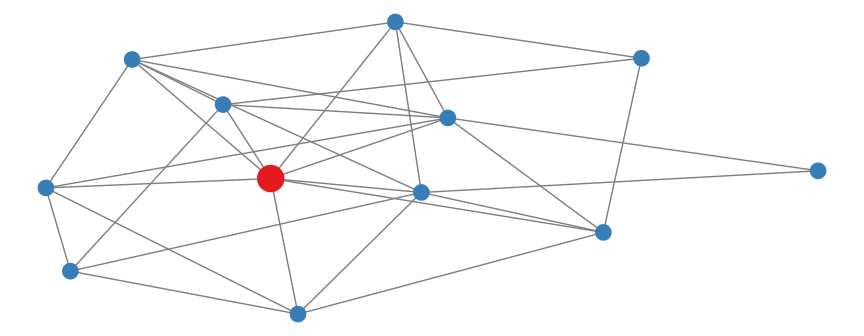

| Begriff | Kategorie | Eigenschaften |
|---|---|---|
| Mensch | Säugetier | Gehen auf zwei Beinen, Sprechfähigkeit, Verwendung selbst hergestellter Werkzeuge |
| Bildschema | ||
| Kollokationen | ||
| Xenolekte |
1 Definitionen
Wieso Definitionen so wichtig sind
Jede wissenschaftliche Disziplin hat ihre eigenen Fachbegriffe, mit denen die Forschenden über ihr Fachgebiet sprechen. Viele Disziplinen verwenden Griechisch oder Latein, um Begriffe für die Diskussion in ihrem Fachgebiet zu schaffen. Im Alltag nennt man zum Beispiel das Tier, mit dem viele Menschen ihre Wohnung und sogar ihr Bett teilen, Katze oder vielleicht auch Hauskatze, aber in der Biologie wird dasselbe Tier auf Lateinisch Felis catus genannt und von Felis silvestris, der Wildkatze, unterschieden. Andere Fachbegriffe sind nicht sofort als solche erkennbar. In der Alltagssprache werden z.B. Spracherwerb und Sprachenlernen meist synonym verwendet, in der Linguistik bezeichnen diese Begriffe dagegen oft unterschiedliche Sachverhalte. Hinzu kommt, dass sich Autoren innerhalb einer Disziplin manchmal nicht einig sind, wie bestimmte Begriffe zu verstehen sind, und dass Begriffe im Laufe der Zeit ihre Bedeutung ändern können.
Die Gefahr der Begriffsverwirrung ist groß. Um sprachliche Missverständnisse zu vermeiden, müssen wissenschaftliche Autoren ihren Lesern genau erklären, was die von ihnen verwendeten Begriffe bedeuten sollen. In diesem Kapitel lernen Sie
- wissenschaftliche Begriffsdefinitionen zu lesen und zu verstehen.
- idiomatische Formulierungen für eigene Definitionen zu verwenden.
Vor dem Schreiben, lesen
Die folgenden Beispiele stammen aus dem Digitalen Lexikon Fremdsprachendidaktik (Roche und Boos 2023). Das Lexikon enthält kurze Texte, die Fachbegriffe aus dem Bereich der Fremdsprachenforschung und des Fremdsprachenunterrichts, insbesondere des Deutschen als Fremdsprache, definieren.
Übungsaufgabe 1.1 Lesen Sie die folgenden Definitionen einmal durch und ergänzen Sie die definierten Begriffe an der richtigen Stelle:
Bildschema(ta) – Kollokationen – Xenolekte
Der Begriff __________ geht auf Johnson (1987) zurück, der es als rekurrentes, immer wieder vorkommendes sensorisches Muster optischer, auditiver, haptischer, motorischer oder olfaktorischer Natur beschreibt. Im Gegensatz zu mentalen Modellen sind Bildschemata generisch in unterschiedlichen Situationen anwendbar. In unseren körperlichen Interaktionen mit der Umwelt erkennen wir sie und speichern sie in schematischer Form. Aus der körperlichen Bewegung, der Manipulation von Objekten, der Wahrnehmung von Druck und externen Kräften etc. leiten wir __________ ab, die uns dann als eine Art generische Vorlage zur Strukturierung konzeptueller Inhalte zur Verfügung stehen. Im Beispielsatz Die Polizei überwacht die Demonstranten wird das __________ der Vertikalität verwendet, um die Machtposition der Polizei zum Ausdruck zu bringen.
Wenn wir mit Gesprächspartnern kommunizieren, die unsere Sprache nicht vollständig beherrschen, passen wir sie häufig durch Vereinfachungen, Paraphrasen, Auslassungen etc. den gegebenen Umständen an. Dabei spielen eine Reihe von Faktoren eine Rolle: Kommunikationsabsichten, Situation (zum Beispiel Öffentlichkeitsgrad), Präferenzen des Sprechers und Erfordernisse des Gesprächspartners. Die daraus resultierenden variierenden Sprachformen nennt man __________ .
Unter __________ versteht man in der Fremdsprachendidaktik häufig gemeinsam miteinander vorkommende, in ihrer Kombination voraussagbare lexikalische Einheiten, zum Beispiel blond und Haar. Neuere Modelle des Fremdsprachenerwerbs gehen davon aus, dass ein Lernen in festen __________, nämlich in Sequenzen und Chunks, besonders in den Anfangsphasen des Erwerbs, eine Grundbedingung für erfolgreichen Erwerb ist (Handwerker 2008). Die zugrundeliegende Idee ist, dass „much of communication makes use of fixed expressions memorized as formulaic chunks” (Ellis und Cadierno 2009, 114). Kommunikation beruht auf solchen Sequenzen, entweder in der Form von __________ […] oder von Idiomen (Wulff 2012). Das Fremdsprachenlernen ist „the learning of an inventory of patterns as arrangements of words with their associated structural meanings” (Ellis und Cadierno 2009: 114). Patterns sind hier nicht zu verstehen als fixierte, aber kontextlose Schablonen im Sinne der audiolingualen Methode, sondern als rekurrente, bedeutungsvolle Muster.
Aufbau und Inhalt einer Definition
In der Logik besteht eine gute Definition immer aus drei Teilen: dem definierten Begriff (z.B. Mensch), der Kategorie, zu der der Begriff gehört (z.B. Säugetier), und den genaueren Eigenschaften, die den Begriff von anderen Begriffen dieser Kategorie unterscheiden (z.B. Gehen auf zwei statt auf vier Beinen, die Fähigkeit zu sprechen, Verwendung selbst hergestellter Werkzeuge).
Übungsaufgabe 1.2 Lesen Sie die Definitionen noch einmal und markieren Sie die Bestandteile im Text mit verschiedenen Farben oder Labels (z.B. #Begriff, #Kategorie, #Eigenschaft). Tragen Sie Ihre Ergebnisse hier ein.
Beim wissenschaftlichen Schreiben ist es oft besonders wichtig anzugeben, wo Sie den Begriff gefunden haben und was dort über den Begriff gesagt wird. Die Definition des Menschen als sprachbegabtes Tier z.B. geht auf den griechischen Philosophen Artistoteles zurück.
Übungsaufgabe 1.3 Suchen Sie in den Definitionen nach Quellenangaben und markieren Sie diese mit einem farbigen Label (z.B. #Quelle). Wer hat was zu dem definierten Begriff gesagt? Seien Sie sich immer darüber bewusst, dass Begriffe je nach Kontext und Disziplin unterschiedlich verwendet werden und dass sich verschiedene Autoren über die genaue Bedeutung eines Begriffs möglicherweise nicht einig sind.
Zeit zum Schreiben
Es ist an der Zeit, selbst einmal einen Versuch zu wagen. Bevor Sie mit dem Schreiben beginnen, brauchen Sie aber erst einmal eine Idee für ein Thema, über das Sie schreiben wollen. Wenn Sie schon eine Idee und ein gut umgrenztes Thema haben, dann machen Sie hier weiter.
Eine Idee finden
In der Nachschrift zu seinem berühmten Roman Der Name der Rose über mysteriöse Giftmorde in einem mittelalterlichen Kloster denkt der Autor Umberto Eco über die Quelle seiner Inspiration nach. Er notiert:
Ich hatte den Drang, einen Mönch zu vergiften. Ich glaube, Romane entstehen aus solchen Ideen-Keimen, der Rest ist Fruchtfleisch, das man nach und nach ansetzt. (Eco 1983, 21)
Am Anfang war also eine einzelne, kleine Idee, aus der sich nach und nach eine große Geschichte entwickelt hat. Auch wissenschaftliche Texte entstehen um eine Idee herum. Bis zum Ende bleibt natürlich noch ein langer Weg, aber eine inspirierende Idee ist ein guter Anfang.
Um spontan ein paar Ideen für ein Thema zu entwickeln, eignet sich das Clustering, eine Technik aus dem kreativen Schreiben (Rico 1983). Das Clustering beginnt mit einem einzelnen Impuls, von dem aus sich Assoziationen frei in alle Richtungen zu einem Netzwerk verzweigen.

Übungsaufgabe 1.4 Wählen Sie ein Schlüsselwort aus Ihrer Disziplin als Impuls aus. Notieren Sie das Schlüsselwort in der Mitte (roter Punkt). Notieren Sie für vier bis fünf Minuten alles, was Ihnen dazu einfällt (blaue Punkte), so dass ein Netzwerk entsteht. Wählen Sie dann einen der blauen Punkt als nächsten Impulsgeber. Erweitern Sie so das Netzwerk, bis eine Ordnung erkennbar wird.
Wenn Sie ein dichtes Netz vor sich haben, wählen Sie ein Teilnetz mit einem Schlüsselwort im Zentrum als Ihr Thema aus.
Ein erster Versuch
Übungsaufgabe 1.5 Wählen Sie einen zentralen Begriff aus Ihrem Thema. Notieren Sie alles, was Ihnen zu diesem Begriff einfällt und wichtig erscheint. Recherchieren Sie gegebenenfalls in der Sekundärliteratur oder im Internet, wie der Begriff in der Fachdiskussion verwendet wird. Vergessen Sie dabei nicht, Ihre Quellen zu dokumentieren.
Übungsaufgabe 1.6 Formulieren Sie nun eine Definition für den ausgewählten Begriff. Orientieren Sie sich dabei in Länge und Stil grob an den Definitionsbeispielen, verlieren Sie sich aber nicht in sprachlichen Details. Wichtiger sind jetzt die inhaltliche Vollständigkeit und die Logik Ihrer Definition. Klicken Sie auf Meine Definition, um einen Text einzugeben.
Meine Definition
Wenn Ihnen kein Thema einfällt oder Sie aus einem anderen Grund keinen ersten Entwurf formulieren können, finden Sie hier ein Beispiel, mit dem Sie weiterarbeiten können. Im Beispiel wird der Begriff Märchen definiert. Kopieren Sie den Text und ergänzen Sie stichwortartig, was Ihnen spontan noch dazu einfällt.
Den ersten Versuch überarbeiten
Nach dem ersten spontanen Entwurf eines Textes folgt der mühsame Weg der Überarbeitung und nochmaligen Überarbeitung. Lassen Sie sich nicht entmutigen. Das geht jedem so, auch erfahrenen Schreibern. In den folgenden Schreibaufgaben können Sie die Definitionen als Modelle für eigene Formulierungen heranziehen. Als Hilfsmittel nutzen Sie außerdem ausgewählte Auszügen aus 346 Definitionen aus dem Digitalen Lexikon Fremdsprachendidaktik (Roche und Boos 2023), die Sie mit einem Interface durchsuchen können.
Eine Definition beginnt oft mit der Einführung des Begriffs und der Kategorie, zu der er gehört. Schauen Sie sich noch einmal die Beispiele für Definitionen an, um zu sehen, wie die Autoren das gemacht haben.
Übungsaufgabe 1.7 Suchen Sie in den folgenden Auszügen nach geeigneten Formulierungen für die Einführung und erste Einordnung Ihres Begriffs. Notieren Sie nützliche Formulierungen im Kasten. Verbessern Sie anschließend Ihren eigenen Text.
Einen Begriff einführen und einordnen
Wie bereits erwähnt, sind Begriffe oft Teil einer Fachdiskussion, in der sie in einer bestimmten Weise verwendet werden und eine bestimmte Bedeutung und Geschichte haben. Definitionen gelten in diesem Bereich, nicht außerhalb und nicht anderswo. Für welchen Bereich gilt zum Beispiel die Definition des Begriffs Kollokationen? Was wäre der kleinstmögliche Geltungsbereich einer Definition?
Übungsaufgabe 1.8 Suchen Sie in den folgenden Auszügen nach geeigneten Formulierungen, die den Geltungsbereich einer Begriffsdefinition explizit benennen. Verwenden Sie diese Formulierungen, um den Geltungsbereich Ihrer eigenen Definition genauer zu bestimmen.
Den Geltungsbereich eines Begriffs bestimmen
Nachdem der Begriff eingeführt, kategorial eingeordnet und der Geltungsbereich der Definition bestimmt sind, müssen die Merkmale beschrieben werden, die allgemein und im Kontext der Arbeit von Bedeutung sind.
Übungsaufgabe 1.9 Suchen Sie in den folgenden Auszügen nach Formulierungen, die einen Begriff zunächst kategorial klassifizieren und dann seine Eigenschaften näher bestimmen. Notieren Sie. Welches grammatische Muster wird dabei häufig genutzt? Verwenden Sie dieses Muster, wenn möglich und nötig, auch in Ihrem eigenen Text.
Einen Begriff näher bestimmen
Zum besseren Verständnis ist es oft hilfreich, den definierten Begriff von benachbarten Begriffen in derselben Kategorie abzugrenzen. Lesen Sie noch einmal die Definition von Bildschema. Wie grenzt der Autor den Begriff vom benachbarten Begriff Mentales Modell ab?
Übungsaufgabe 1.10 Suchen Sie in den folgenden Auszügen nach Formulierungen, die Unterschiede ausdrücken und den definierten Begriff explizit von benachbarten Begriffen abgrenzen. Notieren Sie geeignete Formulierungen. Verbessern Sie dann Ihre eigene Definition, indem Sie Ihren Begriff explizit von einem Nachbarbegriff abgrenzen.
Einen Begriff von Nachbarbegriffen abgrenzen
Eine Definition sollte nicht nur inhaltlich vollständig, präzise und verständlich sein, sondern auch anschaulich. In den Lexikoneinträgen verwenden die Autoren Beispiele, um ihre Definitionen zu veranschaulichen.
Übungsaufgabe 1.11 In den folgenden Auszügen finden Sie Formulierungen, die Beispiele einführen. Verwenden Sie diese, um Ihren eigenen Text zu verbessern und um einige anschauliche Beispiele hinzuzufügen. Eine Besonderheit der deutschen Schriftsprache ist die Verwendung von etwa mit der Bedeutung von zum Beispiel. Suchen Sie in den Auszügen nach Belegen für diese Verwendung und probieren Sie es in Ihrem eigenen Text aus.
Einen Begriff mit einem Beispiel veranschaulichen
Letzte Aufgabe
Ihre Definition ist jetzt felsenfest, wasserdicht und kugelsicher, und außerdem vollständig und gut zu lesen. Vielleicht hat die KI noch einen letzten Tipp für Sie.
Übungsaufgabe 1.12 Lassen Sie Ihren Text abschließend von einer künstlichen Intelligenz überprüfen. Die KI DeepL hilft Ihnen mit Formulierungsvorschlägen. Je besser Ihr eigener Text ist, desto besser sind die Vorschläge der KI. Beachten Sie: Die KI ist nur eine Maschine ohne Textverständnis. Manche vorgeschlagenen Änderungen klingen vielleicht gut, sind aber inhaltlich verkehrt.
Geschafft! Cool.